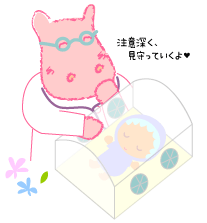

|
Lesson19 : 未熟児、低出生体重児の場合
19-1 未熟児の甲状腺機能
「未熟児」といっても、生まれたのが早かったり（在胎37週より早い）、生まれたときの体重が小さかったりと、いろいろな意味で使われていますが、マススクリーニングでは、生まれたときの体重が2,000ｇ以下の場合、普通と違う扱いをします。つまり、生後４～７日目に通常通りの初回濾紙採血を行いますが、その後の適切な時期にも必ず２回目の濾紙採血をすることを専門学会（日本未熟児新生児学会、日本マス・スクリーニング学会）が勧めています。
| ２回め採血の時期＝以下のいずれか早い時期 |
|---|
|
以前、北海道でうまれた未熟児の方での甲状腺機能異常症について、多数のお子さんのデータをまとめたことがあります。結論的に言うと、未熟児は生まれた後のいろいろな処置のために、甲状腺機能に変化を起こすことが多いことがわかりました。特に影響が大きいのは、未熟性による呼吸不全（呼吸窮迫症候群と言います）がある場合や、ヨードを沢山含んだ消毒剤（代表的なものとして、イソジンやヨードチンキなど）が使われた場合でした。いずれも一過性甲状腺機能低下症となりますが、「一過性」といても数日の甲状腺機能異常ではなく、数ヶ月にわたるチラーヂンＳによる治療が必要なお子さんもいました。
|  | つまり、未熟児の方の中には、先天性甲状腺機能低下症（クレチン症）として直ちに治療を必要とする方もいますし、一時的に治療を必要とするけれど、比較的短期間に治療が中止される方もいます。 |
註：未熟児の取り扱いでややこしいことは、甲状腺自体の働きが悪い「原発性」甲状腺機能低下症が疑われる例以外に、視床下部―下垂体―甲状腺系の成熟が不十分なために起こると考えられる、一過性中枢性甲状腺機能低下症が未熟児にはとても多く見られることです。とくに出生体重1,500ｇ未満、1,000ｇ未満の場合、非常に多くなります。説明が難しくなりますので、今回は触れていません。別の機会にお話しすることにします。